Cliquer pour regarder
Marketing — Campagne vidéo
(13/22)
Une campagne vidéo pour inviter les gens au lancement du magazine Déluge du Culte, sans jamais l'annoncer directement.
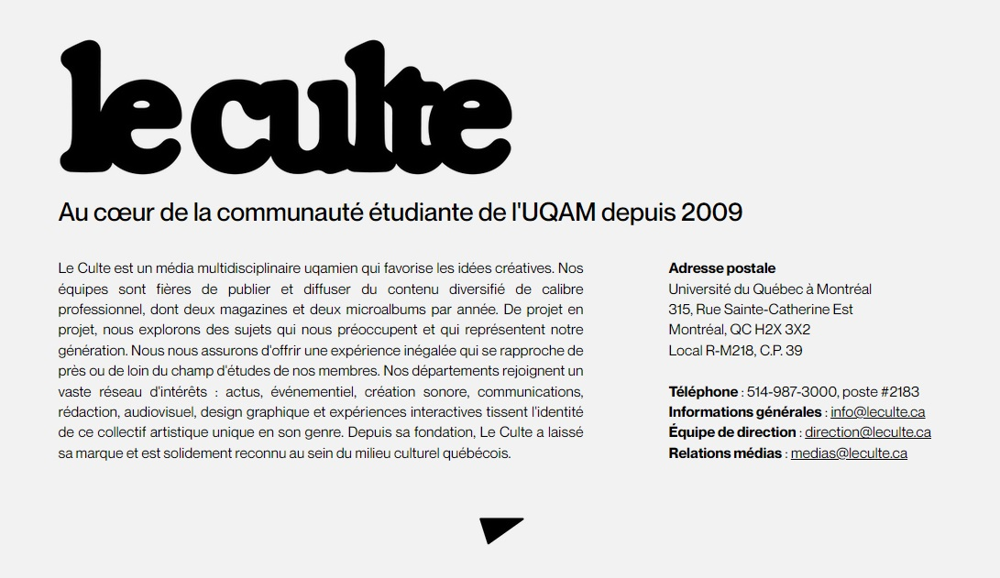
Au lieu d'annoncer la date et le lieu, on a choisi de faire vivre le thème du numéro. Une jeune femme stressée joue avec son briquet, sort de son appart et va chercher le calme dans un parc. Elle allume une cigarette et se fait emporter par un déluge d'images, de la peur à la joie. Puis tout s'arrête : elle se couche dans le gazon. L'invitation arrive seulement à la fin.
Coréalisé avec Camille Labrecque et Maude Langlois. Montage, effets et colorisation dans DaVinci Resolve. Musique de Médéric Potvin et Younesse Moubarik, poème de l'équipe de rédaction du Culte, lu par Samuelle Perreault-Lafrance.
(Processus)
Les moments clés, du premier moodboard jusqu'à l'invitation.
Le numéro s'appelle Déluge. Avant de penser aux plans, j'ai monté un premier moodboard : des bleus froids, de la matière qui se défait, une palette qui passe du blanc au noir.
PourquoiLa vidéo devait faire sentir le thème sans l'expliquer. Une ambiance claire dès le départ a guidé tout le reste.
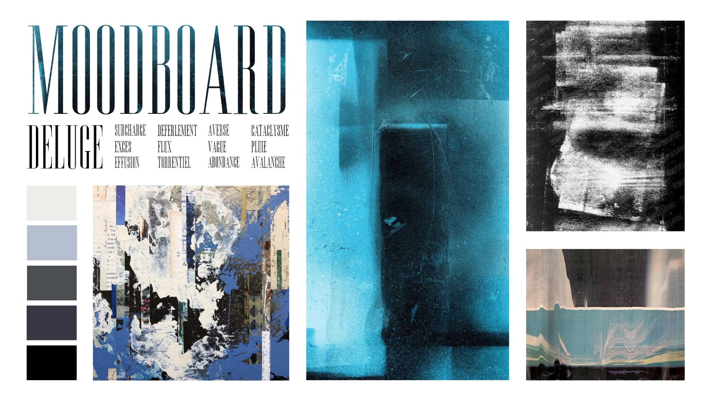
On part du quotidien : on la suit de dos, dans le métro, au dépanneur. Le clic de son briquet ouvre et ferme le déluge.
PourquoiPlus le début est ordinaire, plus le déluge frappe fort. Le briquet revient comme un repère sonore.
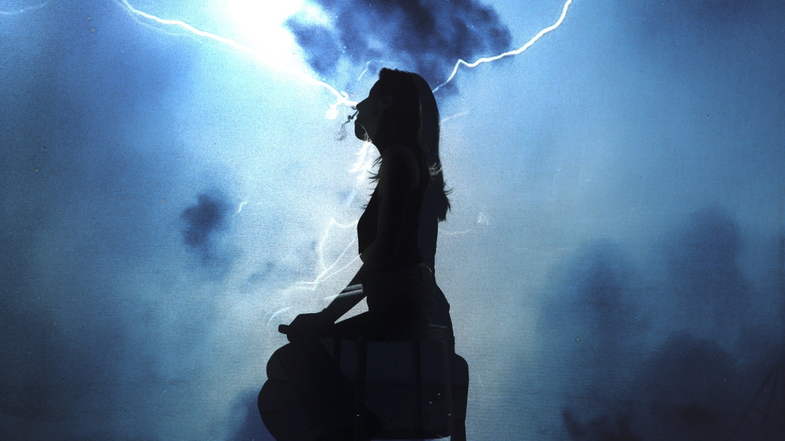
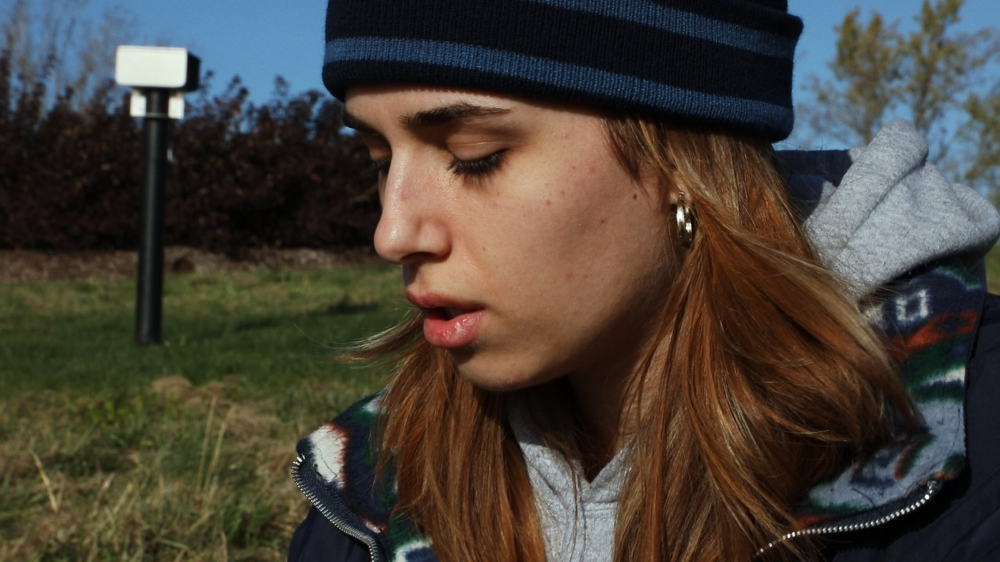
Avant : la réalité, une fille stressée qui cherche le calme.
Le déluge : les émotions, de la peur jusqu'aux beaux souvenirs.
Après : le retour à la réalité.
PourquoiUn moodboard par acte gardait toute l'équipe sur la même longueur d'onde pendant le tournage.
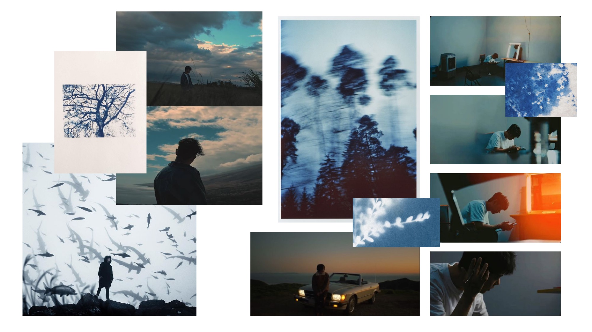
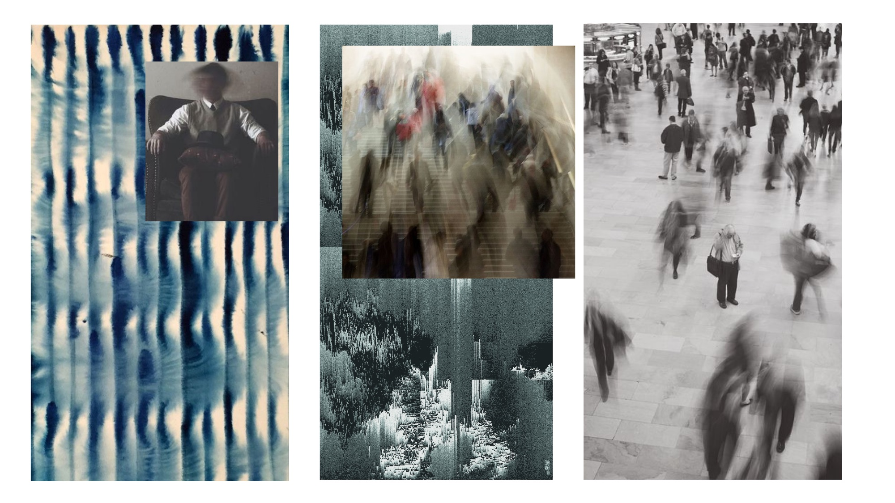
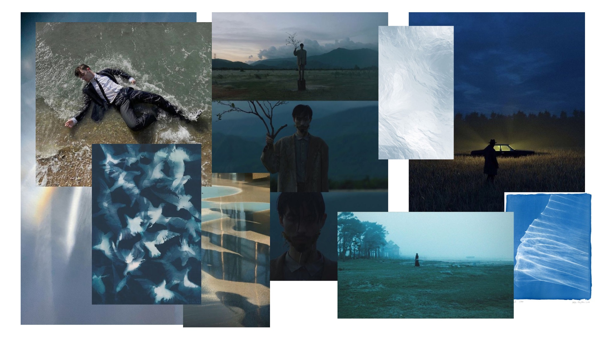
Pour le climax : mosaïques, effet de vieille télé, obturation lente, image coupée en deux, surimpressions. Le parc, grand et calme, sert de contraste.
PourquoiOn voulait que le spectateur vive le déluge au lieu de juste le regarder.
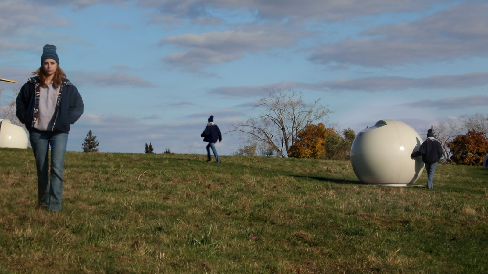
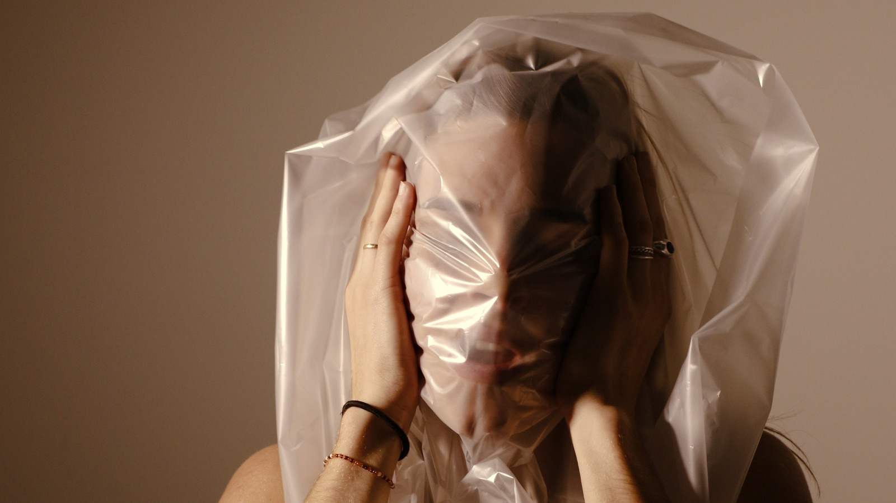
Le titre chromé rappelle l'eau. Il arrive seulement à la fin, avec la date, l'adresse et le logo du Culte : c'est là que la vidéo devient une invitation.
PourquoiGarder les infos pratiques pour la fin laisse toute la place à l'émotion. Quand l'invitation apparaît, les gens veulent déjà savoir où et quand.
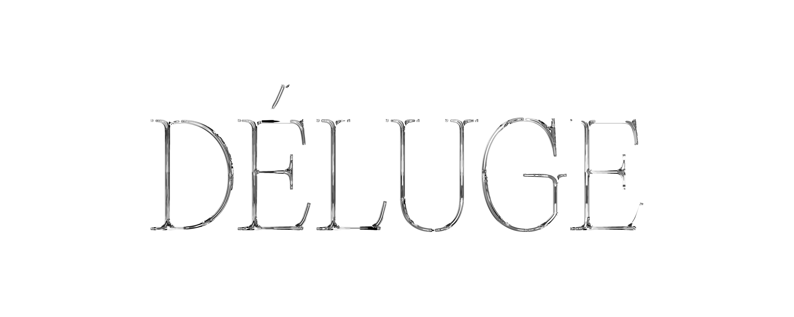
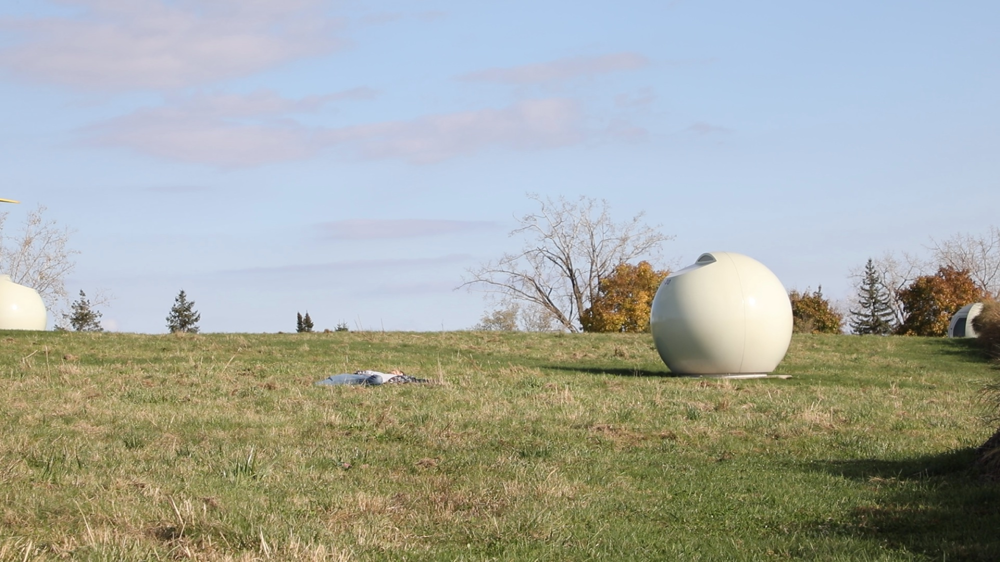
Images12 photos
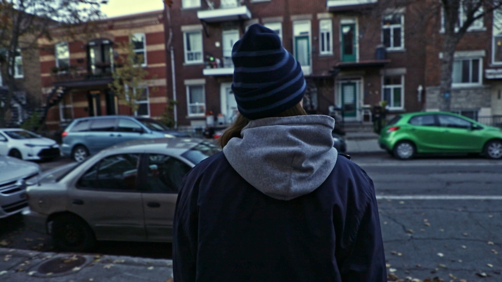
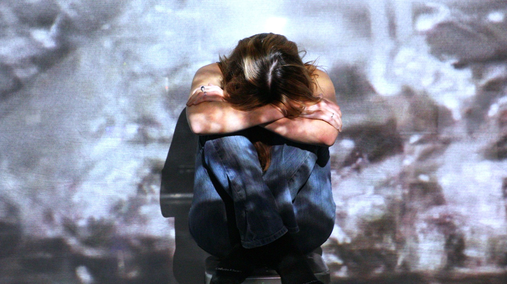
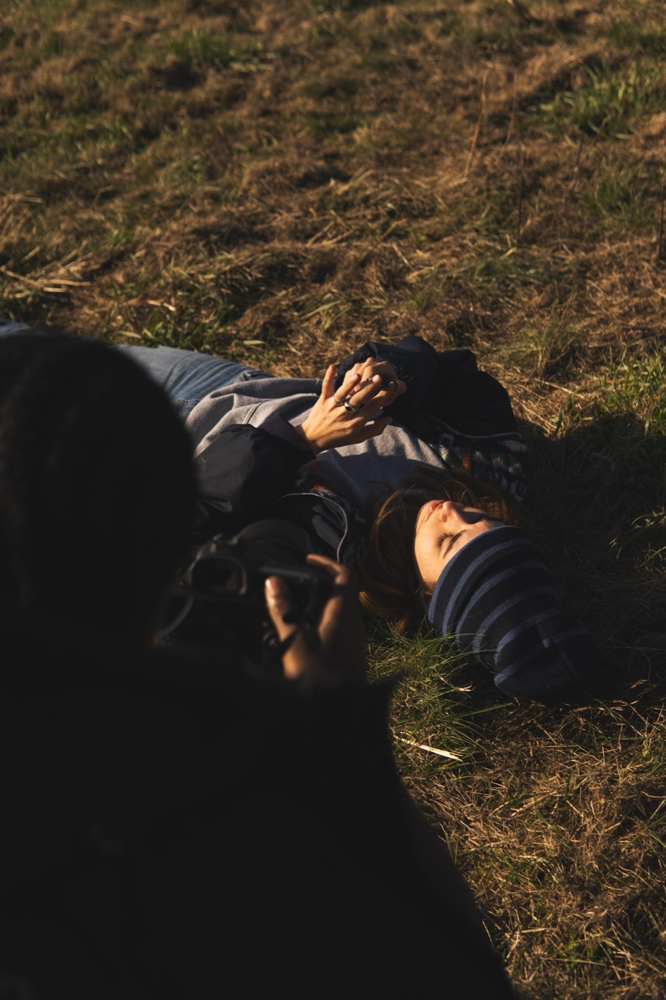
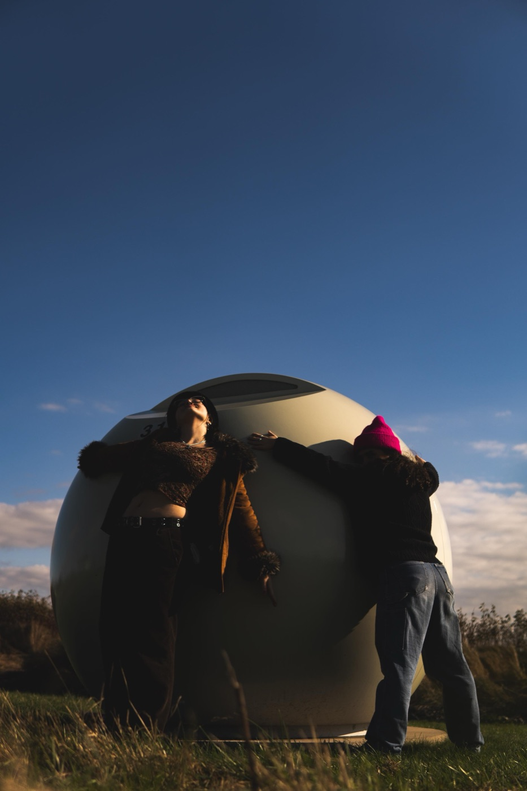
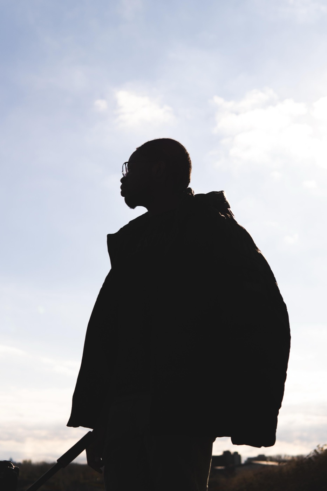
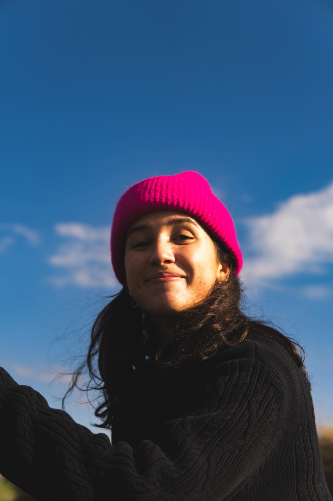